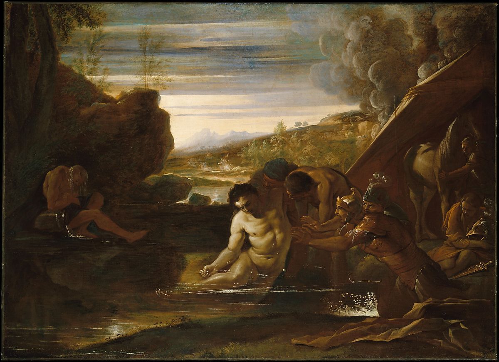

<head>
<meta charset="UTF-8" />
<meta name="keywords" content="drawing, painting" />
<meta name="description" content="drawings by Sunjy" />
<title>Sunjy</title>
<link rel="shortcut icon" type="image/x-icon" href="../../mImages/mCommon/favicon.ico" media="screen" />
<link rel="stylesheet" type="text/css" href="../../mCsses/mCommon/mCssA.css" />
<link rel="stylesheet" type="text/css" href="../../mCsses/mCommon/mCssB.css" />
<link rel="stylesheet" type="text/css" href="../../mCsses/mCommon/mCssC.css" />
<link rel="stylesheet" type="text/css" href="../../mCsses/mCommon/mCssD.css" />
<link rel="stylesheet" type="text/css" href="../../mCsses/mContent/mCssA.css" />
<link rel="stylesheet" type="text/css" href="../../mCsses/mContent/mCssB.css" />
<link rel="stylesheet" type="text/css" href="../../mCsses/mContent/mCssC.css" />
<link rel="stylesheet" type="text/css" href="../../mCsses/mContent/mCssD.css" />
</head>
<script type="text/javascript" src="../../mScripts/mContent/mContentAA.js" /></script>
<script type="text/javascript" src="../../mScripts/mContent/mContentAB.js" /></script>
<script type="text/javascript" src="../../mScripts/mContent/mContentAC.js" /></script>
<script type="text/javascript" src="../../mScripts/mContent/mContentAD.js" /></script>
<script type="text/javascript"></script> 
<script type="text/javascript">
document.write('<div class="mImgAbsolute"></div>');
/*
document.write('<p class="mFontSizeBColor" />From a white paper...</p>');
document.write('<table class="center"><tr><td>');
document.write('');
document.write('</td></tr></table>');
*/
</script>


<script type="text/javascript">
document.write('<p class="mFontSizeBColor" />Alexander the Great Rescued from the River Cydnus</p>');
document.write('<p class="mFontSizeSColor" />By Pietro Testa, ca. 1650. During his campaign against Darius, Alexander halted at Tarsus to bathe in the Cydnus: &#34;But hardly had he entered it when his limbs began to stiffen with a sudden chill, then he lost his color, and the vital warmth left almost his entire body. His attendants . . . carried him almost unconscious to his tent&#34; (Quintus Curtius Rufus, <i>History of Alexander III</i>, V:1–4). To the left is the aged river god. To the right smoke rises from the fire set in Tarsus by Darius&#39;s retreating troops. </p>');
document.write('<table class="center" /><tr><td>');
document.write('History of Alexander III</i>, V:1–4). To the left is the aged river god. To the right smoke rises from the fire set in Tarsus by Darius&#39;s retreating troops. " />');
document.write('</td></tr></table>');
</script>


